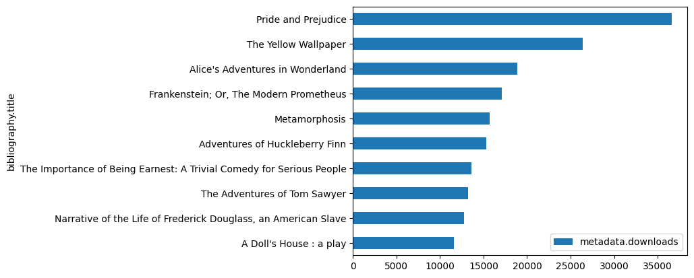

import pandas as pdGetting data from the web: Scraping
Our trusty friend Pandas can read data directly from a web link.
We read the dataset into a dataframe without actually having the file in our folder!
df = pd.read_csv('https://corgis-edu.github.io/corgis/datasets/csv/classics/classics.csv')df.sample()| bibliography.congress classifications | bibliography.languages | bibliography.subjects | bibliography.title | bibliography.type | metadata.downloads | metadata.id | metadata.rank | metadata.url | bibliography.author.birth | ... | metrics.sentiments.polarity | metrics.sentiments.subjectivity | metrics.statistics.average letter per word | metrics.statistics.average sentence length | metrics.statistics.average sentence per word | metrics.statistics.characters | metrics.statistics.polysyllables | metrics.statistics.sentences | metrics.statistics.syllables | metrics.statistics.words | |
|---|---|---|---|---|---|---|---|---|---|---|---|---|---|---|---|---|---|---|---|---|---|
| 268 | Z | en | Classification, Dewey decimal | A Classification and Subject Index for Catalog... | Text | 1244 | 12513 | 269 | https://www.gutenberg.org/ebooks/12513 | 1851 | ... | 0.061563 | 0.27629 | 6.07 | 22.0 | 0.04 | 94731 | 1577 | 687 | 22445.1 | 15596 |
1 rows × 38 columns
df.sort_values(by='metadata.downloads',ascending=True)[-10:].plot.barh(x='bibliography.title',y='metadata.downloads')
requests
The above code is very handy, but what if we simply want to read content that is on the page rather than in a readily available file?
Go to the Classics CSV File webpage and use your Browser’s Inspector to look at the HTML for the page. This will show HTML we discussed very briefly during our first classes.
We are going to get the entire web page using “requests” (documentation).
* “Requests is an elegant and simple HTTP library for Python, built for human beings.”
import requestsresponse = requests.get('https://corgis-edu.github.io/corgis/csv/classics/')response<Response [200]>“Responses” are numerical codes that indicate whether a specific HTTP request has been successfully completed (See HTTP code list)
You may have run into a couple of these on other sites, or even while trying to login to this JupyterHub!
# Note that this won't actually get the csv file
response = requests.get('https://corgis-edu.github.io/corgis/csv/classics/classics.csv')response<Response [404]>Try finding the above URL in your browser: https://corgis-edu.github.io/corgis/csv/classics/classics.csv
response = requests.get('https://corgis-edu.github.io/corgis/csv/classics/')
print(response)<Response [200]># The html of our desired corgis page:
response.text'<!DOCTYPE html>\n<html lang="en-US">\n <head>\n <meta charset="utf-8">\n <meta http-equiv="X-UA-Compatible" content="IE=edge">\n <meta name="viewport" content="width=device-width, initial-scale=1, shrink-to-fit=no">\n\n \n \n\n <title>CORGIS Datasets Project</title>\n <meta name="description" content="\n\n\n\n\n\n\n Github Pages for CORGIS Datasets Project">\n <link rel="canonical" href="https://corgis-edu.github.io//corgis/csv/classics/">\n\n <link rel="stylesheet" href="https://stackpath.bootstrapcdn.com/bootstrap/4.3.1/css/bootstrap.min.css">\n <link rel="stylesheet" href="https://code.jquery.com/ui/1.12.1/themes/base/jquery-ui.css">\n <link rel="stylesheet" href="/corgis/assets/css/main.css">\n\n \n\n \n <link rel="stylesheet" href="/corgis/assets/css/pygments.css">\n\n <style>\n .ui-dialog-titlebar-close {\n padding: 0 !important;\n }\n\n .ui-dialog-titlebar-close:after {\n content: \'\';\n width: 20px;\n height: 20px;\n display: inline-block;\n /* Change path to image*/\n background-image: url(/corgis/assets/ui-icons_444444_256x240.png);\n background-position: -96px -128px;\n background-repeat: no-repeat;\n }\n\n .ui-dialog table {\n width: 100%;\n font-size: 10pt;\n background: white;\n }\n\n .ui-dialog table code {\n word-break: normal;\n }\n\n .ui-dialog td {\n border-bottom: 1px solid #CCC;\n /*overflow: */\n }\n\n .ui-dialog-content {\n max-height: 400px;\n overflow: auto;\n }\n\n .dialog-opener {\n cursor: pointer;\n }\n\n .ui-widget-header {\n border: 0px solid black;\n border-bottom: 1px solid #ccc;\n background: #cde;\n }\n </style>\n \n\n <script src="/corgis/assets/js/jquery-3.3.1.min.js"></script>\n <script src="https://code.jquery.com/ui/1.12.1/jquery-ui.min.js"\n integrity="sha256-VazP97ZCwtekAsvgPBSUwPFKdrwD3unUfSGVYrahUqU="\n crossorigin="anonymous"></script>\n\n <script src="https://cdnjs.cloudflare.com/ajax/libs/knockout/3.5.0/knockout-debug.js"\n integrity="sha256-M5ZomNNnrnEB2WjSbnty5GWGqq6UuAAVNnWECisgEis=" crossorigin="anonymous"></script>\n\n <link rel="stylesheet" href="/corgis/assets/css/multiselect.css">\n <link rel="stylesheet" href="/corgis/assets/css/bootstrap-tagsinput.css">\n\n <script src="/corgis/assets/js/knockout-3.5.0.js"></script>\n <script src="/corgis/assets/js/d3.min.js"></script>\n <script src="/corgis/assets/js/jquery.multi-select.js"></script>\n <script src="/corgis/assets/js/bootstrap-tagsinput.js"></script>\n <script src="/corgis/assets/js/typeahead.bundle.js"></script>\n <script src="/corgis/assets/js/jquery.quicksearch.js"></script>\n <script src="/corgis/assets/js/jquery.multi-select.js"></script>\n <script src="/corgis/assets/js/lunr.js"></script>\n\n \n\n</head>\n <body class="layout--default "\n >\n <div class="container-fluid">\n \n\n\n <p><img class="img-thumbnail float-right" src="/images/datasets/classics-splash.png" alt="classics icon" role="presentation" /></p>\n\n<h1 id="classics-csv-file">Classics CSV File</h1>\n\n<p class="lead">From the CORGIS Dataset Project</p>\n\n<p><span class="text-muted">By Austin Cory Bart <a href="mailto:acbart@vt.edu">acbart@vt.edu</a></span><br />\n<span class="text-muted">Version 2.0.0, created 4/2/2016</span><br />\n<span class="text-muted">Tags: classics, books, texts, text, book, classic, english, shakespeare, literature, novel, language, composition, writing, author, publication, words</span></p>\n\n<h1 id="overview">Overview</h1>\n\n<p>Project Gutenberg (PG) is a volunteer effort to digitize and archive cultural works, to ‘encourage the creation and distribution of eBooks’. It was founded in 1971 by Michael S. Hart and is the oldest digital library. This dataset is a collection of the top 1000 most popular books on Project Gutenberg, as determined by downloads. Each book has information about its authorship, publication date, congressional classication, and a few other fields. It also has some simple, computed statistics based on common metrics such as sentiment analysis, Flesch Kincaid Reading level, and average sentence length.</p>\n\n<p><a href="https://www.gutenberg.org/ebooks/search/?sort_order=downloads">https://www.gutenberg.org/ebooks/search/?sort_order=downloads</a></p>\n\n<h1 id="download">Download</h1>\n\n<p>Download the following file:</p>\n\n<ul>\n <li><a href="../../datasets/csv/classics/classics.csv" download="">classics.csv <span class="fas fa-download"></span></a></li>\n</ul>\n\n<h1 id="key-descriptions">Key Descriptions</h1>\n\n<table class="table table-condensed table-striped table-bordered table-hover">\n<tr>\n <th class="">Key</th>\n <th class="">List of...</th>\n <th class="">Comment</th>\n <th class="">Example Value</th>\n</tr>\n\n<tr>\n <td>bibliography.congress classifications</td>\n <td>String</td> \n <td>$MISSING_FIELD</td>\n <td><code>"PR"</code></td>\n</tr>\n\n<tr>\n <td>bibliography.languages</td>\n <td>String</td> \n <td>$MISSING_FIELD</td>\n <td><code>"en"</code></td>\n</tr>\n\n<tr>\n <td>bibliography.subjects</td>\n <td>String</td> \n <td>$MISSING_FIELD</td>\n <td><code>"Sisters -- Fiction,Courtship -- Fiction,Social classes -- Fiction,England -- Fiction,Domestic fiction,Young women -- Fiction,Love stories"</code></td>\n</tr>\n\n<tr>\n <td>bibliography.title</td>\n <td>String</td> \n <td>$MISSING_FIELD</td>\n <td><code>"Pride and Prejudice"</code></td>\n</tr>\n\n<tr>\n <td>bibliography.type</td>\n <td>String</td> \n <td>$MISSING_FIELD</td>\n <td><code>"Text"</code></td>\n</tr>\n\n<tr>\n <td>metadata.downloads</td>\n <td>Integer</td> \n <td>The number of times this book has been downloaded from Project Gutenberg, as of the last update (circa Spring 2016).</td>\n <td><code>36576</code></td>\n</tr>\n\n<tr>\n <td>metadata.id</td>\n <td>Integer</td> \n <td>Every book on Project Gutenberg has a unique ID number. You can use this number to check the book on project gutenberg (e.g., book 110 is <a href="http://www.gutenberg.org/ebooks/110">http://www.gutenberg.org/ebooks/110</a>).</td>\n <td><code>1342</code></td>\n</tr>\n\n<tr>\n <td>metadata.rank</td>\n <td>Integer</td> \n <td>The rank of this book in comparison to other books on Gutenberg, measured by number of downloads. A lower rank indicatest that that book is more popular.</td>\n <td><code>1</code></td>\n</tr>\n\n<tr>\n <td>metadata.url</td>\n <td>String</td> \n <td>$MISSING_FIELD</td>\n <td><code>"https://www.gutenberg.org/ebooks/1342"</code></td>\n</tr>\n\n<tr>\n <td>bibliography.author.birth</td>\n <td>Integer</td> \n <td>The recorded birth year of the author. If their birth year is unknown, it is replaced with "0".</td>\n <td><code>1775</code></td>\n</tr>\n\n<tr>\n <td>bibliography.author.death</td>\n <td>Integer</td> \n <td>The recorded year of the author\'s death. If their death year is unknown, it is replaced with "0".</td>\n <td><code>1817</code></td>\n</tr>\n\n<tr>\n <td>bibliography.author.name</td>\n <td>String</td> \n <td>$MISSING_FIELD</td>\n <td><code>"Austen, Jane"</code></td>\n</tr>\n\n<tr>\n <td>bibliography.publication.day</td>\n <td>Integer</td> \n <td>The day of the month when the book was published. Notice that missing values have been coded as "0".</td>\n <td><code>1</code></td>\n</tr>\n\n<tr>\n <td>bibliography.publication.full</td>\n <td>String</td> \n <td>$MISSING_FIELD</td>\n <td><code>"June, 1998"</code></td>\n</tr>\n\n<tr>\n <td>bibliography.publication.month</td>\n <td>Integer</td> \n <td>The month of the year when the book was published; 1 corresponds to January, 2 to February, etc. Notice that missing values have been coded as "0".</td>\n <td><code>6</code></td>\n</tr>\n\n<tr>\n <td>bibliography.publication.month name</td>\n <td>String</td> \n <td>$MISSING_FIELD</td>\n <td><code>"June"</code></td>\n</tr>\n\n<tr>\n <td>bibliography.publication.year</td>\n <td>Integer</td> \n <td>The year when the book was published according to Project Gutenberg. Keep in mind that this may not be the original publication date of the work, just that particular edition of the work. Notice that missing values have been coded as "0".</td>\n <td><code>1998</code></td>\n</tr>\n\n<tr>\n <td>metadata.formats.total</td>\n <td>Integer</td> \n <td>Project Gutenberg makes books available in a wide variety of file formats, including raw text files, HTML web pages, audio books, etc. This field indicates the number of ways that this book is available.</td>\n <td><code>8</code></td>\n</tr>\n\n<tr>\n <td>metadata.formats.types</td>\n <td>String</td> \n <td>$MISSING_FIELD</td>\n <td><code>"text/plain,text/plain; charset=us-ascii,application/pdf,application/x-mobipocket-ebook,application/zip,application/rdf+xml,application/epub+zip,text/html; charset=us-ascii"</code></td>\n</tr>\n\n<tr>\n <td>metrics.difficulty.automated readability index</td>\n <td>Float</td> \n <td>The Automated Readability Index is a number indicating the understandability of the text. This number is an approximate US Grade Level needed to comprehend the text, calculated using the characters per word and words per sentences.</td>\n <td><code>10.7</code></td>\n</tr>\n\n<tr>\n <td>metrics.difficulty.coleman liau index</td>\n <td>Float</td> \n <td>The Coleman Liau Index is a number indicating the understandability of the text. This number is an approximate US Grade Level needed to comprehend the text, calculated using characters instead of syllables, similar to the Automated Readability Index.</td>\n <td><code>10.73</code></td>\n</tr>\n\n<tr>\n <td>metrics.difficulty.dale chall readability score</td>\n <td>Float</td> \n <td>The Dale Chall Readability Score provides a numeric gauge of the comprehension difficulty that readers come upon when reading a text. It uses a list of 3000 words that groups of fourth-grade American students could reliably understand, considering any word not on that list to be difficult. This number is an approximate US Grade Level needed to comprehend the text.</td>\n <td><code>5.7</code></td>\n</tr>\n\n<tr>\n <td>metrics.difficulty.difficult words</td>\n <td>Integer</td> \n <td>The number of words in the text that are considered "difficult"; that is, they are not on a list of 3000 words that are considered understandable by fourth-grade American students.</td>\n <td><code>9032</code></td>\n</tr>\n\n<tr>\n <td>metrics.difficulty.flesch kincaid grade</td>\n <td>Float</td> \n <td>The "Flesch-Kincaid Grade Level Formula" presents a score as a U.S. grade level, making it easier to understand. It uses a similar formula to the Flesch Reading Ease measure.</td>\n <td><code>7.9</code></td>\n</tr>\n\n<tr>\n <td>metrics.difficulty.flesch reading ease</td>\n <td>Float</td> \n <td>The \'Flesch Reading Ease\' uses the sentence length (number of words per sentence) and the number of syllables per word in an equation to calculate the reading ease. Texts with a very high Flesch reading Ease score (about 100) are very easy to read, have short sentences and no words of more than two syllables.</td>\n <td><code>70.13</code></td>\n</tr>\n\n<tr>\n <td>metrics.difficulty.gunning fog</td>\n <td>Float</td> \n <td>The Gunning Fog Index measures the readability of English writing. The index estimates the years of formal education needed to understand the text on a first reading. The formula is calculated using the ratio of words to sentences and the percentage of words that are complex (i.e. have three or more syllables).</td>\n <td><code>9.200000000000001</code></td>\n</tr>\n\n<tr>\n <td>metrics.difficulty.linsear write formula</td>\n <td>Float</td> \n <td>Linsear Write is a readability metric for English text, purportedly developed for the United States Air Force to help them calculate the readability of their technical manuals. It was designed to calculate the United States grade level of a text sample based on sentence length and the number words used that have three or more syllables.</td>\n <td><code>13.5</code></td>\n</tr>\n\n<tr>\n <td>metrics.difficulty.smog index</td>\n <td>Float</td> \n <td>The SMOG grade is a measure of readability that estimates the years of education needed to understand a piece of writing. SMOG is the acronym derived from "Simple Measure of Gobbledygook". Its formula is based on the number of polysyllables (words with three or more syllables) and the number of sentences.</td>\n <td><code>3.1</code></td>\n</tr>\n\n<tr>\n <td>metrics.sentiments.polarity</td>\n <td>Float</td> \n <td>Sentiment analysis attempts to determine the attitude of a speaker or a writer with respect to some topic or the overall contextual polarity of a document. Polarity in particular refers to how positive or negative the author is towards the content.</td>\n <td><code>0.13671337760500446</code></td>\n</tr>\n\n<tr>\n <td>metrics.sentiments.subjectivity</td>\n <td>Float</td> \n <td>Sentiment analysis attempts to determine the attitude of a speaker or a writer with respect to some topic or the overall contextual polarity of a document. Subjectivity (as opposed to Objectivity) in particular refers to whether the text is opinionated or attempts to stay factual.</td>\n <td><code>0.5222391494704692</code></td>\n</tr>\n\n<tr>\n <td>metrics.statistics.average letter per word</td>\n <td>Float</td> \n <td>$MISSING_FIELD</td>\n <td><code>4.83</code></td>\n</tr>\n\n<tr>\n <td>metrics.statistics.average sentence length</td>\n <td>Float</td> \n <td>$MISSING_FIELD</td>\n <td><code>18.0</code></td>\n</tr>\n\n<tr>\n <td>metrics.statistics.average sentence per word</td>\n <td>Float</td> \n <td>$MISSING_FIELD</td>\n <td><code>0.05</code></td>\n</tr>\n\n<tr>\n <td>metrics.statistics.characters</td>\n <td>Integer</td> \n <td>Characters are letters and symbols in a text, not the number of people.</td>\n <td><code>586794</code></td>\n</tr>\n\n<tr>\n <td>metrics.statistics.polysyllables</td>\n <td>Integer</td> \n <td>The number of words that have 3 or more syllables.</td>\n <td><code>4603</code></td>\n</tr>\n\n<tr>\n <td>metrics.statistics.sentences</td>\n <td>Integer</td> \n <td>$MISSING_FIELD</td>\n <td><code>6511</code></td>\n</tr>\n\n<tr>\n <td>metrics.statistics.syllables</td>\n <td>Float</td> \n <td>$MISSING_FIELD</td>\n <td><code>170648.1</code></td>\n</tr>\n\n<tr>\n <td>metrics.statistics.words</td>\n <td>Integer</td> \n <td>$MISSING_FIELD</td>\n <td><code>121533</code></td>\n</tr>\n\n</table>\n\n </div>\n\n <footer id="footer" class="site-footer">\n <div class="copyright">\n \n <p>© 2023 CORGIS Datasets Project. Project by Austin Cory Bart, Dennis Kafura, Clifford A. Shaffer, Javier Tibau, Luke Gusukuma, Eli Tilevich.</p>\n \n </div>\n</footer>\n\n <script src="https://use.fontawesome.com/releases/v5.0.12/js/all.js"></script>\n<script src="https://stackpath.bootstrapcdn.com/bootstrap/4.3.1/js/bootstrap.bundle.min.js"></script>\n </body>\n \n</html>'print(response.text)<!DOCTYPE html>
<html lang="en-US">
<head>
<meta charset="utf-8">
<meta http-equiv="X-UA-Compatible" content="IE=edge">
<meta name="viewport" content="width=device-width, initial-scale=1, shrink-to-fit=no">
<title>CORGIS Datasets Project</title>
<meta name="description" content="
Github Pages for CORGIS Datasets Project">
<link rel="canonical" href="https://corgis-edu.github.io//corgis/csv/classics/">
<link rel="stylesheet" href="https://stackpath.bootstrapcdn.com/bootstrap/4.3.1/css/bootstrap.min.css">
<link rel="stylesheet" href="https://code.jquery.com/ui/1.12.1/themes/base/jquery-ui.css">
<link rel="stylesheet" href="/corgis/assets/css/main.css">
<link rel="stylesheet" href="/corgis/assets/css/pygments.css">
<style>
.ui-dialog-titlebar-close {
padding: 0 !important;
}
.ui-dialog-titlebar-close:after {
content: '';
width: 20px;
height: 20px;
display: inline-block;
/* Change path to image*/
background-image: url(/corgis/assets/ui-icons_444444_256x240.png);
background-position: -96px -128px;
background-repeat: no-repeat;
}
.ui-dialog table {
width: 100%;
font-size: 10pt;
background: white;
}
.ui-dialog table code {
word-break: normal;
}
.ui-dialog td {
border-bottom: 1px solid #CCC;
/*overflow: */
}
.ui-dialog-content {
max-height: 400px;
overflow: auto;
}
.dialog-opener {
cursor: pointer;
}
.ui-widget-header {
border: 0px solid black;
border-bottom: 1px solid #ccc;
background: #cde;
}
</style>
<script src="/corgis/assets/js/jquery-3.3.1.min.js"></script>
<script src="https://code.jquery.com/ui/1.12.1/jquery-ui.min.js"
integrity="sha256-VazP97ZCwtekAsvgPBSUwPFKdrwD3unUfSGVYrahUqU="
crossorigin="anonymous"></script>
<script src="https://cdnjs.cloudflare.com/ajax/libs/knockout/3.5.0/knockout-debug.js"
integrity="sha256-M5ZomNNnrnEB2WjSbnty5GWGqq6UuAAVNnWECisgEis=" crossorigin="anonymous"></script>
<link rel="stylesheet" href="/corgis/assets/css/multiselect.css">
<link rel="stylesheet" href="/corgis/assets/css/bootstrap-tagsinput.css">
<script src="/corgis/assets/js/knockout-3.5.0.js"></script>
<script src="/corgis/assets/js/d3.min.js"></script>
<script src="/corgis/assets/js/jquery.multi-select.js"></script>
<script src="/corgis/assets/js/bootstrap-tagsinput.js"></script>
<script src="/corgis/assets/js/typeahead.bundle.js"></script>
<script src="/corgis/assets/js/jquery.quicksearch.js"></script>
<script src="/corgis/assets/js/jquery.multi-select.js"></script>
<script src="/corgis/assets/js/lunr.js"></script>
</head>
<body class="layout--default "
>
<div class="container-fluid">
<p><img class="img-thumbnail float-right" src="/images/datasets/classics-splash.png" alt="classics icon" role="presentation" /></p>
<h1 id="classics-csv-file">Classics CSV File</h1>
<p class="lead">From the CORGIS Dataset Project</p>
<p><span class="text-muted">By Austin Cory Bart <a href="mailto:acbart@vt.edu">acbart@vt.edu</a></span><br />
<span class="text-muted">Version 2.0.0, created 4/2/2016</span><br />
<span class="text-muted">Tags: classics, books, texts, text, book, classic, english, shakespeare, literature, novel, language, composition, writing, author, publication, words</span></p>
<h1 id="overview">Overview</h1>
<p>Project Gutenberg (PG) is a volunteer effort to digitize and archive cultural works, to ‘encourage the creation and distribution of eBooks’. It was founded in 1971 by Michael S. Hart and is the oldest digital library. This dataset is a collection of the top 1000 most popular books on Project Gutenberg, as determined by downloads. Each book has information about its authorship, publication date, congressional classication, and a few other fields. It also has some simple, computed statistics based on common metrics such as sentiment analysis, Flesch Kincaid Reading level, and average sentence length.</p>
<p><a href="https://www.gutenberg.org/ebooks/search/?sort_order=downloads">https://www.gutenberg.org/ebooks/search/?sort_order=downloads</a></p>
<h1 id="download">Download</h1>
<p>Download the following file:</p>
<ul>
<li><a href="../../datasets/csv/classics/classics.csv" download="">classics.csv <span class="fas fa-download"></span></a></li>
</ul>
<h1 id="key-descriptions">Key Descriptions</h1>
<table class="table table-condensed table-striped table-bordered table-hover">
<tr>
<th class="">Key</th>
<th class="">List of...</th>
<th class="">Comment</th>
<th class="">Example Value</th>
</tr>
<tr>
<td>bibliography.congress classifications</td>
<td>String</td>
<td>$MISSING_FIELD</td>
<td><code>"PR"</code></td>
</tr>
<tr>
<td>bibliography.languages</td>
<td>String</td>
<td>$MISSING_FIELD</td>
<td><code>"en"</code></td>
</tr>
<tr>
<td>bibliography.subjects</td>
<td>String</td>
<td>$MISSING_FIELD</td>
<td><code>"Sisters -- Fiction,Courtship -- Fiction,Social classes -- Fiction,England -- Fiction,Domestic fiction,Young women -- Fiction,Love stories"</code></td>
</tr>
<tr>
<td>bibliography.title</td>
<td>String</td>
<td>$MISSING_FIELD</td>
<td><code>"Pride and Prejudice"</code></td>
</tr>
<tr>
<td>bibliography.type</td>
<td>String</td>
<td>$MISSING_FIELD</td>
<td><code>"Text"</code></td>
</tr>
<tr>
<td>metadata.downloads</td>
<td>Integer</td>
<td>The number of times this book has been downloaded from Project Gutenberg, as of the last update (circa Spring 2016).</td>
<td><code>36576</code></td>
</tr>
<tr>
<td>metadata.id</td>
<td>Integer</td>
<td>Every book on Project Gutenberg has a unique ID number. You can use this number to check the book on project gutenberg (e.g., book 110 is <a href="http://www.gutenberg.org/ebooks/110">http://www.gutenberg.org/ebooks/110</a>).</td>
<td><code>1342</code></td>
</tr>
<tr>
<td>metadata.rank</td>
<td>Integer</td>
<td>The rank of this book in comparison to other books on Gutenberg, measured by number of downloads. A lower rank indicatest that that book is more popular.</td>
<td><code>1</code></td>
</tr>
<tr>
<td>metadata.url</td>
<td>String</td>
<td>$MISSING_FIELD</td>
<td><code>"https://www.gutenberg.org/ebooks/1342"</code></td>
</tr>
<tr>
<td>bibliography.author.birth</td>
<td>Integer</td>
<td>The recorded birth year of the author. If their birth year is unknown, it is replaced with "0".</td>
<td><code>1775</code></td>
</tr>
<tr>
<td>bibliography.author.death</td>
<td>Integer</td>
<td>The recorded year of the author's death. If their death year is unknown, it is replaced with "0".</td>
<td><code>1817</code></td>
</tr>
<tr>
<td>bibliography.author.name</td>
<td>String</td>
<td>$MISSING_FIELD</td>
<td><code>"Austen, Jane"</code></td>
</tr>
<tr>
<td>bibliography.publication.day</td>
<td>Integer</td>
<td>The day of the month when the book was published. Notice that missing values have been coded as "0".</td>
<td><code>1</code></td>
</tr>
<tr>
<td>bibliography.publication.full</td>
<td>String</td>
<td>$MISSING_FIELD</td>
<td><code>"June, 1998"</code></td>
</tr>
<tr>
<td>bibliography.publication.month</td>
<td>Integer</td>
<td>The month of the year when the book was published; 1 corresponds to January, 2 to February, etc. Notice that missing values have been coded as "0".</td>
<td><code>6</code></td>
</tr>
<tr>
<td>bibliography.publication.month name</td>
<td>String</td>
<td>$MISSING_FIELD</td>
<td><code>"June"</code></td>
</tr>
<tr>
<td>bibliography.publication.year</td>
<td>Integer</td>
<td>The year when the book was published according to Project Gutenberg. Keep in mind that this may not be the original publication date of the work, just that particular edition of the work. Notice that missing values have been coded as "0".</td>
<td><code>1998</code></td>
</tr>
<tr>
<td>metadata.formats.total</td>
<td>Integer</td>
<td>Project Gutenberg makes books available in a wide variety of file formats, including raw text files, HTML web pages, audio books, etc. This field indicates the number of ways that this book is available.</td>
<td><code>8</code></td>
</tr>
<tr>
<td>metadata.formats.types</td>
<td>String</td>
<td>$MISSING_FIELD</td>
<td><code>"text/plain,text/plain; charset=us-ascii,application/pdf,application/x-mobipocket-ebook,application/zip,application/rdf+xml,application/epub+zip,text/html; charset=us-ascii"</code></td>
</tr>
<tr>
<td>metrics.difficulty.automated readability index</td>
<td>Float</td>
<td>The Automated Readability Index is a number indicating the understandability of the text. This number is an approximate US Grade Level needed to comprehend the text, calculated using the characters per word and words per sentences.</td>
<td><code>10.7</code></td>
</tr>
<tr>
<td>metrics.difficulty.coleman liau index</td>
<td>Float</td>
<td>The Coleman Liau Index is a number indicating the understandability of the text. This number is an approximate US Grade Level needed to comprehend the text, calculated using characters instead of syllables, similar to the Automated Readability Index.</td>
<td><code>10.73</code></td>
</tr>
<tr>
<td>metrics.difficulty.dale chall readability score</td>
<td>Float</td>
<td>The Dale Chall Readability Score provides a numeric gauge of the comprehension difficulty that readers come upon when reading a text. It uses a list of 3000 words that groups of fourth-grade American students could reliably understand, considering any word not on that list to be difficult. This number is an approximate US Grade Level needed to comprehend the text.</td>
<td><code>5.7</code></td>
</tr>
<tr>
<td>metrics.difficulty.difficult words</td>
<td>Integer</td>
<td>The number of words in the text that are considered "difficult"; that is, they are not on a list of 3000 words that are considered understandable by fourth-grade American students.</td>
<td><code>9032</code></td>
</tr>
<tr>
<td>metrics.difficulty.flesch kincaid grade</td>
<td>Float</td>
<td>The "Flesch-Kincaid Grade Level Formula" presents a score as a U.S. grade level, making it easier to understand. It uses a similar formula to the Flesch Reading Ease measure.</td>
<td><code>7.9</code></td>
</tr>
<tr>
<td>metrics.difficulty.flesch reading ease</td>
<td>Float</td>
<td>The 'Flesch Reading Ease' uses the sentence length (number of words per sentence) and the number of syllables per word in an equation to calculate the reading ease. Texts with a very high Flesch reading Ease score (about 100) are very easy to read, have short sentences and no words of more than two syllables.</td>
<td><code>70.13</code></td>
</tr>
<tr>
<td>metrics.difficulty.gunning fog</td>
<td>Float</td>
<td>The Gunning Fog Index measures the readability of English writing. The index estimates the years of formal education needed to understand the text on a first reading. The formula is calculated using the ratio of words to sentences and the percentage of words that are complex (i.e. have three or more syllables).</td>
<td><code>9.200000000000001</code></td>
</tr>
<tr>
<td>metrics.difficulty.linsear write formula</td>
<td>Float</td>
<td>Linsear Write is a readability metric for English text, purportedly developed for the United States Air Force to help them calculate the readability of their technical manuals. It was designed to calculate the United States grade level of a text sample based on sentence length and the number words used that have three or more syllables.</td>
<td><code>13.5</code></td>
</tr>
<tr>
<td>metrics.difficulty.smog index</td>
<td>Float</td>
<td>The SMOG grade is a measure of readability that estimates the years of education needed to understand a piece of writing. SMOG is the acronym derived from "Simple Measure of Gobbledygook". Its formula is based on the number of polysyllables (words with three or more syllables) and the number of sentences.</td>
<td><code>3.1</code></td>
</tr>
<tr>
<td>metrics.sentiments.polarity</td>
<td>Float</td>
<td>Sentiment analysis attempts to determine the attitude of a speaker or a writer with respect to some topic or the overall contextual polarity of a document. Polarity in particular refers to how positive or negative the author is towards the content.</td>
<td><code>0.13671337760500446</code></td>
</tr>
<tr>
<td>metrics.sentiments.subjectivity</td>
<td>Float</td>
<td>Sentiment analysis attempts to determine the attitude of a speaker or a writer with respect to some topic or the overall contextual polarity of a document. Subjectivity (as opposed to Objectivity) in particular refers to whether the text is opinionated or attempts to stay factual.</td>
<td><code>0.5222391494704692</code></td>
</tr>
<tr>
<td>metrics.statistics.average letter per word</td>
<td>Float</td>
<td>$MISSING_FIELD</td>
<td><code>4.83</code></td>
</tr>
<tr>
<td>metrics.statistics.average sentence length</td>
<td>Float</td>
<td>$MISSING_FIELD</td>
<td><code>18.0</code></td>
</tr>
<tr>
<td>metrics.statistics.average sentence per word</td>
<td>Float</td>
<td>$MISSING_FIELD</td>
<td><code>0.05</code></td>
</tr>
<tr>
<td>metrics.statistics.characters</td>
<td>Integer</td>
<td>Characters are letters and symbols in a text, not the number of people.</td>
<td><code>586794</code></td>
</tr>
<tr>
<td>metrics.statistics.polysyllables</td>
<td>Integer</td>
<td>The number of words that have 3 or more syllables.</td>
<td><code>4603</code></td>
</tr>
<tr>
<td>metrics.statistics.sentences</td>
<td>Integer</td>
<td>$MISSING_FIELD</td>
<td><code>6511</code></td>
</tr>
<tr>
<td>metrics.statistics.syllables</td>
<td>Float</td>
<td>$MISSING_FIELD</td>
<td><code>170648.1</code></td>
</tr>
<tr>
<td>metrics.statistics.words</td>
<td>Integer</td>
<td>$MISSING_FIELD</td>
<td><code>121533</code></td>
</tr>
</table>
</div>
<footer id="footer" class="site-footer">
<div class="copyright">
<p>© 2023 CORGIS Datasets Project. Project by Austin Cory Bart, Dennis Kafura, Clifford A. Shaffer, Javier Tibau, Luke Gusukuma, Eli Tilevich.</p>
</div>
</footer>
<script src="https://use.fontawesome.com/releases/v5.0.12/js/all.js"></script>
<script src="https://stackpath.bootstrapcdn.com/bootstrap/4.3.1/js/bootstrap.bundle.min.js"></script>
</body>
</html>In all likelihood, we won’t want all this html. We will only want particular pieces of it. Maybe the text of a screenplay, or an article, or the lyrics of a song…
Fortunately, there’s a Python library for extracting these pieces from a web page: BeautifulSoup
“BeautifulSoup is a Python library for pulling data out of HTML and XML files. It works with your favorite parser to provide idiomatic ways of navigating, searching, and modifying the parse tree. It commonly saves programmers hours or days of work.” – documentation
from bs4 import BeautifulSoup# Save all the html in a string variable
html_string = response.text
# Use BeautifulSoup to create a new object that will allow you to search for HTML tags
document = BeautifulSoup(html_string, "html.parser")
# This "document" variable is an object that has a "find" method
document.find('a')<a href="mailto:acbart@vt.edu">acbart@vt.edu</a>What is <a href="...?
-> This is an HTML tag…. so what are HTML “tags”?
HTML: Hyper-Text Markup Language
HTML uses “tags” to classify different elements, for example: * <h1>...</h1>: a large header * <img src="...">: an image * <a href="...">Deep Space Nine</a>: a link
Let’s look at a simpler website: http://static.decontextualize.com/kittens.html * This toy website was made by Prof. Allison Parrish explicitly for the purposes of teaching BeautifulSoup.
response = requests.get('http://static.decontextualize.com/kittens.html')print(response.text)<!doctype html>
<html>
<head>
<title>Kittens!</title>
<style type="text/css">
span.lastcheckup { font-family: "Courier", fixed; font-size: 11px; }
</style>
</head>
<body>
<h1>Kittens and the TV Shows They Love</h1>
<div class="kitten">
<h2>Fluffy</h2>
<div><img src="http://placekitten.com/120/120"></div>
<ul class="tvshows">
<li>
<a href="http://www.imdb.com/title/tt0106145/">Deep Space Nine</a>
</li>
<li>
<a href="http://www.imdb.com/title/tt0088576/">Mr. Belvedere</a>
</li>
</ul>
Last check-up: <span class="lastcheckup">2014-01-17</span>
</div>
<div class="kitten">
<h2>Monsieur Whiskeurs</h2>
<div><img src="http://placekitten.com/110/110"></div>
<ul class="tvshows">
<li>
<a href="http://www.imdb.com/title/tt0106179/">The X-Files</a>
</li>
<li>
<a href="http://www.imdb.com/title/tt0098800/">Fresh Prince</a>
</li>
</ul>
Last check-up: <span class="lastcheckup">2013-11-02</span>
</div>
</body>
</html>
Here are some tag examples: * <h1>Kittens and the TV Shows They Love</h1>: a large header * <img src="http://placekitten.com/120/120">: an image * <a href="http://www.imdb.com/title/tt0106145/">Deep Space Nine</a>: a link
And you’ll see additional tags: * <ul>: unordered list * <li>: list item * <head> and <body>: like header information and the body of a document * <div>: section of the document
There’s a lot to learn about HTML, but this is mainly to show you examples of tags. BeautifulSoup will let you parse HTML documents based on these tags.
# Save all the html in a string variable
html_string = response.text
# Use BeautifulSoup to create a new object that will allow you to search for HTML tags
document = BeautifulSoup(html_string, "html.parser")
# Find the title:
# Up above, we see that the title is surrounded by the "h1" tag
document.find('h1')<h1>Kittens and the TV Shows They Love</h1># Just want the text? Use .text
document.find('h1').text'Kittens and the TV Shows They Love'# You can find the kitten names too. Those are included with "h2" tags.
document.find('h2')<h2>Fluffy</h2># But if you want to find _all_ of them, then use find_all
document.find_all('h2')[<h2>Fluffy</h2>, <h2>Monsieur Whiskeurs</h2>]# For these you can't use a simple .text
# This will give an error
document.find_all('h2').text--------------------------------------------------------------------------- AttributeError Traceback (most recent call last) Cell In[19], line 3 1 # For these you can't use a simple .text 2 # This will give an error ----> 3 document.find_all('h2').text File /opt/conda/lib/python3.11/site-packages/bs4/element.py:2428, in ResultSet.__getattr__(self, key) 2426 def __getattr__(self, key): 2427 """Raise a helpful exception to explain a common code fix.""" -> 2428 raise AttributeError( 2429 "ResultSet object has no attribute '%s'. You're probably treating a list of elements like a single element. Did you call find_all() when you meant to call find()?" % key 2430 ) AttributeError: ResultSet object has no attribute 'text'. You're probably treating a list of elements like a single element. Did you call find_all() when you meant to call find()?
# You need to use .text on each individual item
for i in document.find_all('h2'):
print(i)
print(i.text)<h2>Fluffy</h2>
Fluffy
<h2>Monsieur Whiskeurs</h2>
Monsieur Whiskeurs# You need to use .text on each individual item
kitten_names = []
for i in document.find_all('h2'):
kitten_names.append(i.text)
kitten_names# We can also find all the images:
document.find_all("img")# Here, the important info is not text printed on the page,
# it's a link to the pic
# (try going to one)
# how do we get these? -> treat it like the key of a dictionary
for i in document.find_all("img"):
print(i)
print(i['src'])Fun aside: you can use the IPython library to visualize HTML right inside the Jupyter notebook.
from IPython.core.display import HTML
HTML('<img src="http://placekitten.com/120/120">')%%HTML
<img src="http://placekitten.com/120/120">from IPython.lib.display import YouTubeVideo
YouTubeVideo('Awf45u6zrP0')HTML(str(document.find("img")))# another thing we may want to try out
# is getting all of the links
links = []
for i in document.find_all("a"):
links.append(i['href'])
linksOk, enough cat silliness…
Back to our literary classics.
response = requests.get('https://corgis-edu.github.io/corgis/csv/classics/')
html_string = response.text
document = BeautifulSoup(html_string, "html.parser")# We can look for the first link:
document.find('a')# We can search for all the links on the page with:
document.find_all('a')This allows us now to find the download link for the csv file. * What are the “..”? The “..” say to go up to a higher-level directory.
* Here, if the web page that we were visiting was https://corgis-edu.github.io/corgis/csv/classics/ and the link specification contained href="../../datasets/csv/classics/classics.csv", then the resulting link would be https://corgis-edu.github.io/corgis/csv/classics/../../datasets/csv/classics/classics.csv => https://corgis-edu.github.io/corgis/datasets/csv/classics/classics.csv
classicslinks = document.find_all('a')
for i in classicslinks:
print(i['href'])
print(i.text)
if i.text == 'classics.csv':
print('I found the link:')
print(i['href'])Beware the whitespace!
classicslinks = document.find_all('a')
for i in classicslinks:
print(i['href'])
print(i.text)
if i.text == 'classics.csv ':
print('I found the link:')
print(i['href'])classicslinks = document.find_all('a')
for i in classicslinks:
if 'classics.csv' in i.text:
print('I found the link:')
print(i['href'])
url = 'https://corgis-edu.github.io/corgis/csv/classics/' + i['href']
print(url)classics_df = pd.read_csv(url)classics_dfclassics_df.sort_values(by='metadata.downloads',ascending=True)[-10:].plot.barh(x='bibliography.title',y='metadata.downloads')A few more examples for practice
Getting the script of Coco from IMSDB
import requestsresponse = requests.get('https://imsdb.com/scripts/Coco.html')responseresponse.textWoah, too much!
We break it down with BeautifulSoup
from bs4 import BeautifulSouphtml_string = response.text
document = BeautifulSoup(html_string, "html.parser")documentdocument itself is still the original HTML
type(document)document.find('pre')There is still a lot of formatting to work through, but we have now found the screenplay text.
print(document.find('pre').text)Grabbing data from GitHub
Let’s look at a problematic example. * This illustrates one complication you may run into: dealing with dynamic content
The repository lists of the Pandas-relevant organization are linked on “https://github.com/orgs/pandas-dev/repositories”. Let’s see about getting the links on that page in order to identify the organization’s repositories.
import requestsresponse = requests.get('https://github.com/orgs/pandas-dev/repositories')responsehtml_string = response.textfrom bs4 import BeautifulSoupdocument = BeautifulSoup(html_string, "html.parser")document.find_all('a')documentOne cannot simply use requests for this site. The requests library is intended for static content, and it cannot directly handle dynamic content that is rendered by JavaScript in the browser. To scrape dynamic content, you’ll need other libraries and tools, for example, selenium, playwright, or scrapy.
Books To Scrape
- https://books.toscrape.com/ – a website that loves to be scraped!
url = 'http://books.toscrape.com/'# Send a GET request to the page
response = requests.get(url)response# Parse the page content
soup = BeautifulSoup(response.text, 'html.parser')# Find all book titles and their links
books = soup.find_all('article', class_='product_pod')books[0]books[0].find('h3')books[0].h3books[0].afor book in books:
title = book.a.img['alt']
link = book.a['href']
print("Title: ", title, ", Link: ", url + link)books[0].find('p', attrs={'class':"price_color"})books[0].find('p', attrs={'class':"price_color"}).textfor book in books:
title = book.h3.a['title']
price = book.find('p', attrs={'class':"price_color"}).text
print(title, ": ", price[1:])